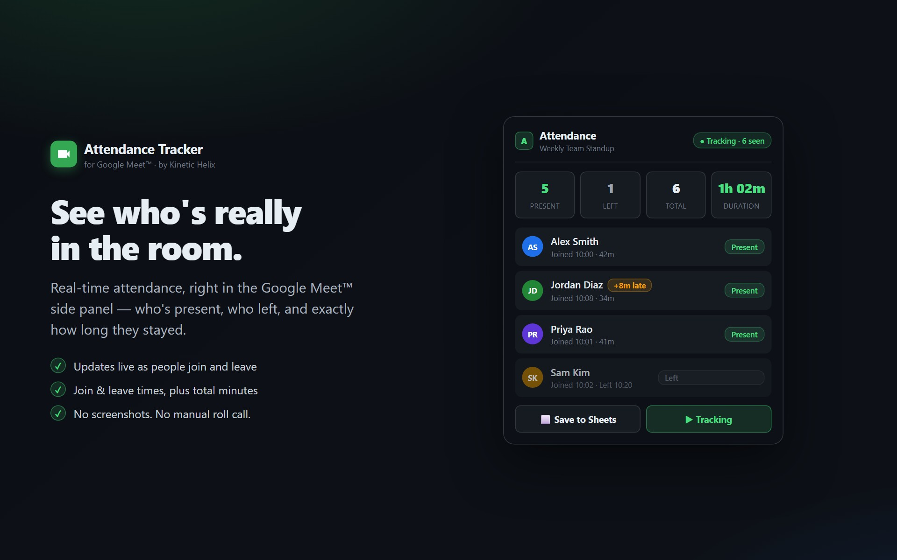

How to track attendance in Google Meet
Three options, ranked by what most people actually need. Built-in attendance reports are restricted to one Workspace tier; manual tracking doesn't scale; the Marketplace add-on works for everyone.

Option 1: Google's built-in attendance reports
Google ships an attendance feature inside Meet itself, but with a hard restriction: it's only available on the Google Workspace Education Plus edition. Not Business, not Enterprise, not Education Fundamentals or Standard — only Education Plus.
If you're eligible, an organizer can enable it per-meeting:
- Start a meeting in Google Meet from a Calendar event.
- Click the host controls icon in the bottom-right.
- Toggle Attendance tracking on.
- After the meeting ends, the organizer receives an email with a CSV attached: name, email, duration in the meeting.
Pros: nothing to install, native to Meet. Cons: only Education Plus, no live view during the meeting, no Google Sheets export, no late-arrival highlighting, no recurring-meeting roll-up.
Option 2: Manual roll call from the participants panel
If your Workspace doesn't qualify and you only have one meeting to track, you can do it by hand:
- During the meeting, click the people icon (top-right) to open the participants panel.
- Copy each name into a Google Sheet manually.
- Note who left early by watching the panel update.
This works for a 5-person meeting once. For a recurring standup with 20 people, it falls apart fast — you miss late arrivals, you can't see exact join times, and you can't tell who only stayed five minutes.
Option 3: Install a Marketplace add-on
This is the path for everyone outside Education Plus, and arguably the best path even for Education Plus users who want a live view or a Sheet export. The Attendance Tracker add-on takes about 30 seconds to install:
- Open the Marketplace listing.
- Click Install and grant the permissions (read-only Meet participants, calendar event matching, Sheets write).
- Join your next Google Meet call. The Attendance Tracker side panel appears alongside chat and the participant list.
- Tracking starts automatically. When the meeting ends, the attendance sheet is auto-exported to your Drive and emailed to you.
Comparison at a glance
| Feature | Built-in | Manual | Add-on |
|---|---|---|---|
| Free | Education Plus only | Yes | Yes |
| Live view during meeting | No | Yes (manual) | Yes |
| Export to Sheets | CSV only | Manual | One click |
| Late-arrival highlighting | No | No | Yes |
| Recurring meeting roll-ups | No | No | Yes |
| Personal Gmail accounts | No | Yes | Yes |
Common questions
Does it work without my Workspace admin doing anything?
Yes. The add-on installs at the individual level. If your Workspace admin completes a one-time domain-wide delegation setup, you'll also see participants from outside your organization in the attendance report — but it's not required.
Can I track attendance in a meeting I didn't organize?
Yes, as long as you're in the meeting. The Meet REST API exposes the participant list to any authenticated participant who has the meeting code.
What if the meeting has already ended?
If you forget to open the side panel during the call, you'll get an empty state when you open it after — the Meet API doesn't expose attendance for meetings that ended before the add-on was loaded. Open the panel at the start, even if you're not actively looking at it.
Set up attendance tracking in 30 seconds
Free, no credit card, works on every Workspace tier including personal Gmail.
Install from Marketplace